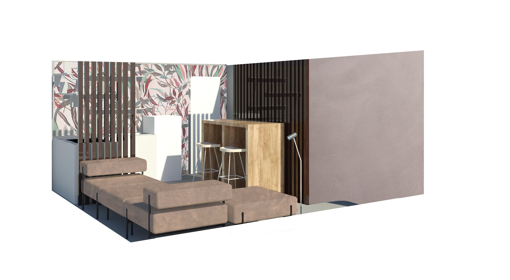
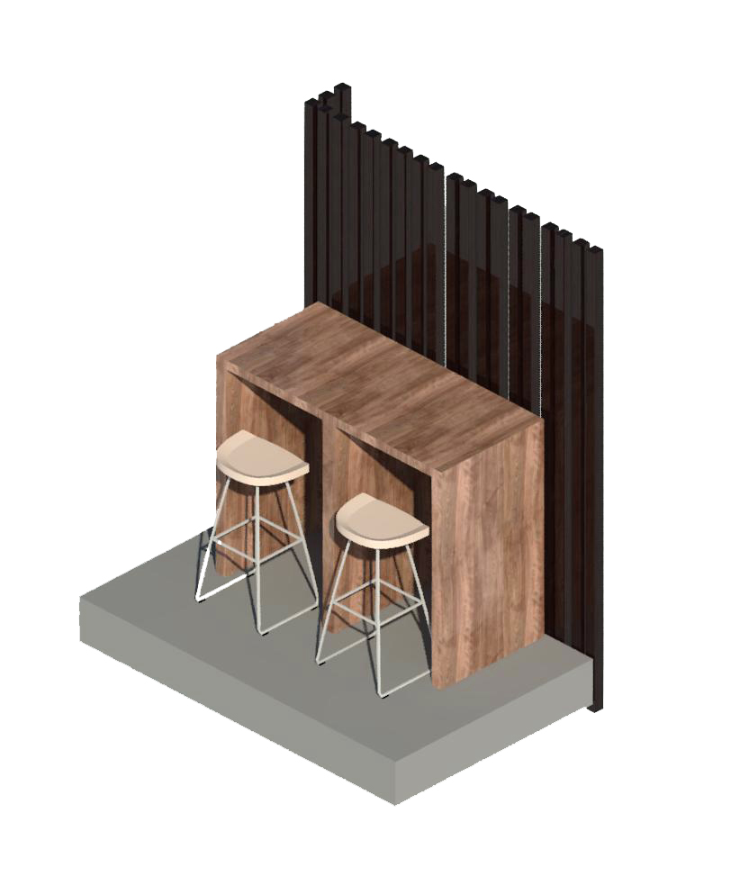
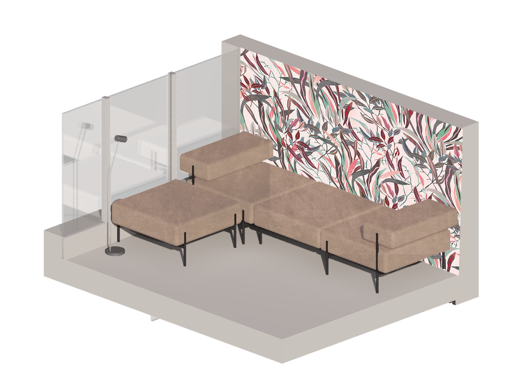

Piano 0
Cucina/Living
Il piano 0 o piano d'ingresso concepito come zona giorno si articola con una piccola cucina dotata di piano cottura, lavabo, frigorifero, mobile contenitore e mensole. Una zona pranzo composta da un tavolo e sgabelli che unisce la zona cucina e la zona living e zona living con un divano componibile.




Scala
La verticalità è l’elemento che unisce i due piani della suite, infatti la scala non presenta un vero e proprio parapetto ma balaustri ripetuti che partono dal soffito del piano d’ingresso e terminano nei gradini della scala.